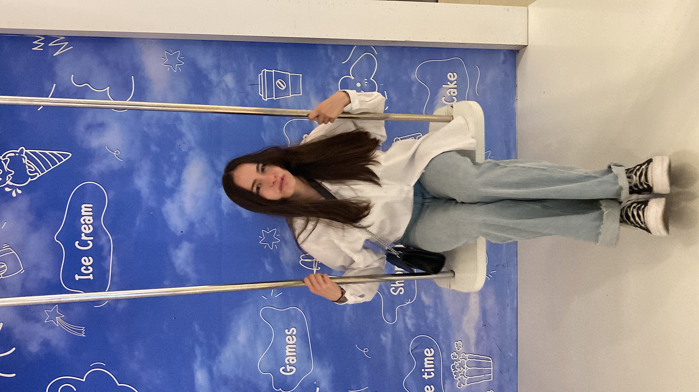

8 aprilie 2024
AFI Brasov
💜 Te iubesc pentru ca faci copilul din mine sa zambeasca 💜
Suntem adolescenți. Câteodată când stau sa mă gândesc la asta rămân uimit. Încercăm atât de mult sa trecem prin procesul dureros de maturizare, încât uitam de
esență si de inocentă noastră. Stau câteodată si merg înapoi in timp, si simt un gol când îmi dau seama cum încet-încet se stinge flacăra copilului inocent si
curios. Dar tu, surprinzător, nu ți-ai pierdut-o niciodată, si m-ai ajutat sa mi-o păstrez si pe a mea. Nu ratezi nicio ocazie de a-mi straluci ochii, lasandu-ti
inocenta sa iasa la iveala. Timpul pe care copiii din sinea noastra l-au petrecut impreuna este cel care ne-a legat inimile cel mai mult.